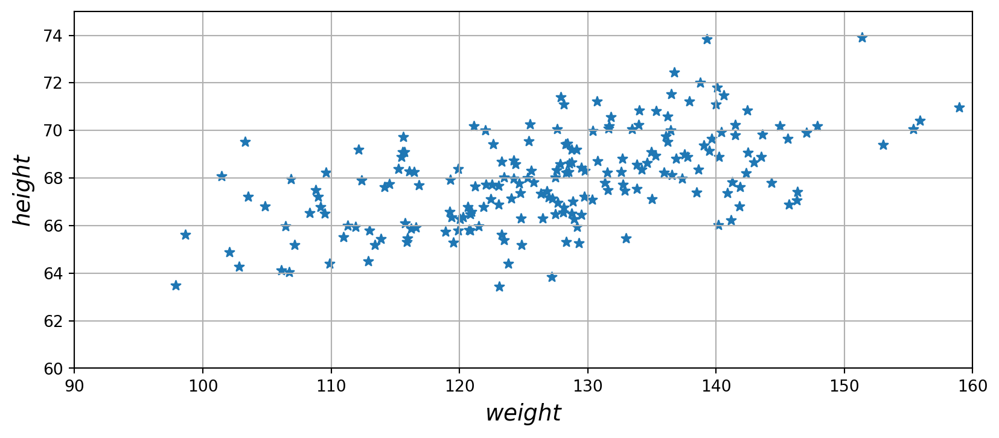
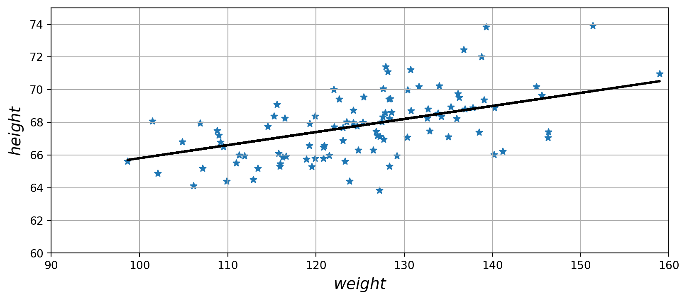

import sys
assert sys.version_info >= (3, 7)- Dataset - Height and Weight data for 18 year olds
- Plot original data on scatterplot
- Split data into training and test sets
- Use regression to see if the data is linear
- Get coefficients of linear equation and r-value
- low r-value – linear regression is not the best fit for the data
from packaging import version
import sklearn
assert version.parse(sklearn.__version__) >= version.parse("1.0.1")import pandas as pd
df = pd.read_csv("./SOCR-HeightWeight-checkpoint.csv")
#df['Weight(Pounds)']
df['Height(Inches)']0 65.78331
1 71.51521
2 69.39874
3 68.21660
4 67.78781
...
24995 69.50215
24996 64.54826
24997 64.69855
24998 67.52918
24999 68.87761
Name: Height(Inches), Length: 25000, dtype: float64import numpy as npPlot original data on scatterplot
import matplotlib.pyplot as plt
plt.rc('font', size=14)
plt.rc('axes', labelsize=14, titlesize=14)
plt.rc('legend', fontsize=14)
plt.rc('xtick', labelsize=10)
plt.rc('ytick', labelsize=10)
plt.figure(figsize=(10, 4))
X = df['Weight(Pounds)'][0:200]
y = df['Height(Inches)'][0:200]
plt.scatter(X, y, marker='*')
plt.xlabel("$weight$")
plt.ylabel("$height$", rotation=90)
plt.axis([90, 160, 60, 75])
plt.grid()
plt.show()
Split data into testing and training sets
from sklearn import datasets, linear_model
from sklearn.metrics import mean_squared_error, r2_score
# Split the data into training/testing sets
X_train = X[:-100]
X_test = X[100:]
# Split the targets into training/testing sets
y_train = y[:-100]
y_test = y[100:]Fit the data to a linear regression
# Create linear regression object
regr = linear_model.LinearRegression()
# Train the model using the training sets
X_train=np.array(X_train).reshape(-1, 1) # reshaping to 2D array
#y_train=np.array(y_train).reshape(-1, 1) # reshaping to 2D array
regr.fit(X_train, y_train)LinearRegression()# Make predictions using the testing set
X_test=np.array(X_test).reshape(-1, 1) # reshaping to 2D array
y_pred = regr.predict(X_test)Get coefficients of linear-equation
# The coefficients
print("Coefficients: \n", regr.coef_)
print("y-intercept: \n", regr.intercept_)
# The mean squared error
print("Mean squared error: %.2f" % mean_squared_error(y_test, y_pred))
# The coefficient of determination: 1 is perfect prediction
print("Coefficient of determination: %.2f" % r2_score(y_test, y_pred))Coefficients:
[0.07991179]
y-intercept:
57.8157253513461
Mean squared error: 2.83
Coefficient of determination: 0.31The low r-value tells us that a linear regression is not the best fit for this data. We know that this model will not make very accurate predictions.
# Plot outputs
import matplotlib.pyplot as plt
plt.rc('font', size=14)
plt.rc('axes', labelsize=14, titlesize=14)
plt.rc('legend', fontsize=14)
plt.rc('xtick', labelsize=10)
plt.rc('ytick', labelsize=10)
plt.figure(figsize=(10, 4))
plt.xlabel("$weight$")
plt.ylabel("$height$", rotation=90)
plt.axis([90, 160, 60, 75])
plt.scatter(X_test, y_test, marker='*')
plt.plot(X_test, y_pred, color="black", linewidth=2)
plt.grid()
plt.show()
Trying other regressions to find a better fit
import pandas as pd
from sklearn.model_selection import train_test_split
from sklearn.linear_model import LinearRegression, Ridge, Lasso
from sklearn.metrics import mean_squared_error, r2_score
from sklearn.preprocessing import PolynomialFeatures
from sklearn.pipeline import make_pipeline
# Fit a polynomial regression model
degree = 2 # You can try different degrees
poly_reg = make_pipeline(PolynomialFeatures(degree), LinearRegression())
poly_reg.fit(X_train, y_train)
# Fit a Ridge regression model
ridge_reg = Ridge(alpha=1.0) # Alpha is a hyperparameter that you can tune
ridge_reg.fit(X_train, y_train)
# Fit a Lasso regression model
lasso_reg = Lasso(alpha=0.1) # Alpha is a hyperparameter that you can tune
lasso_reg.fit(X_train, y_train)
# Evaluate the models using test data
models = {'Polynomial': poly_reg, 'Ridge': ridge_reg, 'Lasso': lasso_reg}
for name, model in models.items():
y_pred = model.predict(X_test)
mse = mean_squared_error(y_test, y_pred)
r2 = r2_score(y_test, y_pred)
print(f'{name} Regression - MSE: {mse:.2f}, R²: {r2:.2f}')Polynomial Regression - MSE: 2.82, R²: 0.31
Ridge Regression - MSE: 2.83, R²: 0.31
Lasso Regression - MSE: 2.83, R²: 0.31All three models show very similar performance in terms of both MSE and R². The Ridge and Lasso’s similar performance to polynomial regression could imply that higher-order terms do not significantly improve the model, or the chosen degree for the polynomial model was not high enough to capture more complex relationships.